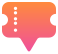

Design, phase 0
Logo : trois directions
Event Village, c'est se retrouver, faire la fête, un lieu, un billet. Chaque direction part d'une de ces idées, avec une touche sénégalaise discrète. Les symboles sont dessinés à la main en SVG ; le nom est écrit en Plus Jakarta Sans, la police de l'application, vectorisée pour s'afficher pareil partout.
Recommandation : « Repère »
- C'est le seul qui dit le métier sans légende : un billet, posé sur un lieu.
- Il sert trois fois : logo, repère des événements sur la carte, et sceau des billets. Une seule forme à apprendre.
- Le plus lisible à 16 px : une silhouette pleine, deux encoches et une pointe.
- Il ne ressemble à aucune marque de billetterie connue ; la perforation 2-2-1 (+221) donne au Sénégal sa place, pour qui sait la voir.
- « Géew » est le plus chaleureux et pourra servir de motif (fonds, chargements). « Bras levés » est le plus festif, mais le moins lié au billet.
1. Repère Recommandée
Un billet posé sur la carte : le talon perforé, les deux encoches, et la pointe qui montre le lieu de la fête.
Touche sénégalaise : la perforation du talon compte 2, 2 puis 1 trous, comme +221, l'indicatif du Sénégal. Un clin d'œil qui ne gêne personne et que les Sénégalais reconnaîtront.
Sur fond clair
Sur fond sombre

Logo horizontal et versions d'une seule couleur


En situation
Sur un billet
Nuit Sabar sur la Corniche
TCK-20261128-7F3A1C9E2B
QR fictif, noir sur blanc comme aujourd'hui.
Repère de carte
Icône sur un téléphone
2. Géew
Le géew, c'est le cercle qui se forme autour du sabar ou de l'arène de lutte. On se retrouve, on fait cercle, la fête est au milieu.
Touche sénégalaise : le mot et l'idée. La forme reste simple (sept points autour d'un huitième), sans motif folklorique.
Sur fond clair
Sur fond sombre

Logo horizontal et versions d'une seule couleur
En situation
Sur un billet
Nuit Sabar sur la Corniche
TCK-20261128-7F3A1C9E2B
Repère de carte
Sur la carte, un rond se confond avec le point « vous êtes ici » : il faudrait une pastille de prix pour chaque événement.
Icône sur un téléphone
3. Bras levés
Deux billets levés comme des bras dessinent le V de Village ; avec la tête au milieu, c'est quelqu'un qui fait la fête.
Touche sénégalaise : aucune dans la forme, elle viendrait des couleurs et des images. C'est la direction la plus universelle, et la plus jeune.
Sur fond clair

Sur fond sombre
Logo horizontal et versions d'une seule couleur


En situation
Sur un billet
Nuit Sabar sur la Corniche
TCK-20261128-7F3A1C9E2B
Repère de carte
Le symbole n'a pas de pointe : sur la carte, il faudrait le poser sur une épingle.
Icône sur un téléphone
Comparaison
| Critère | Repère | Géew | Bras levés |
|---|---|---|---|
| Lisible à 16 px | Oui : silhouette pleine | Oui, mais lu comme une fleur de points | Oui : un V et un point |
| Dit le métier sans légende | Oui : billet + lieu | Non : il faut l'histoire | À moitié : la fête, pas le billet |
| Sert sur la carte et le billet | Oui, tel quel | Non : se confond avec « vous êtes ici » | Non : il faut une épingle |
| Touche sénégalaise | Discrète : 2-2-1 (+221) | Forte : le géew | Aucune dans la forme |
| Risque | Une pointe de repère est courante sur les cartes ; les encoches et le talon la rendent propre à Event Village | Proche des pictogrammes « communauté » ; peu distinctif sans couleur | Geste « bras levés » fréquent dans l'événementiel |
À faire après le choix : favicon .ico et PNG, icône Apple 180 px, icônes de l'application installée (192 et 512 px, version « maskable »), image de partage. Chaque symbole a une version réduite pour 16 px (perforation retirée).